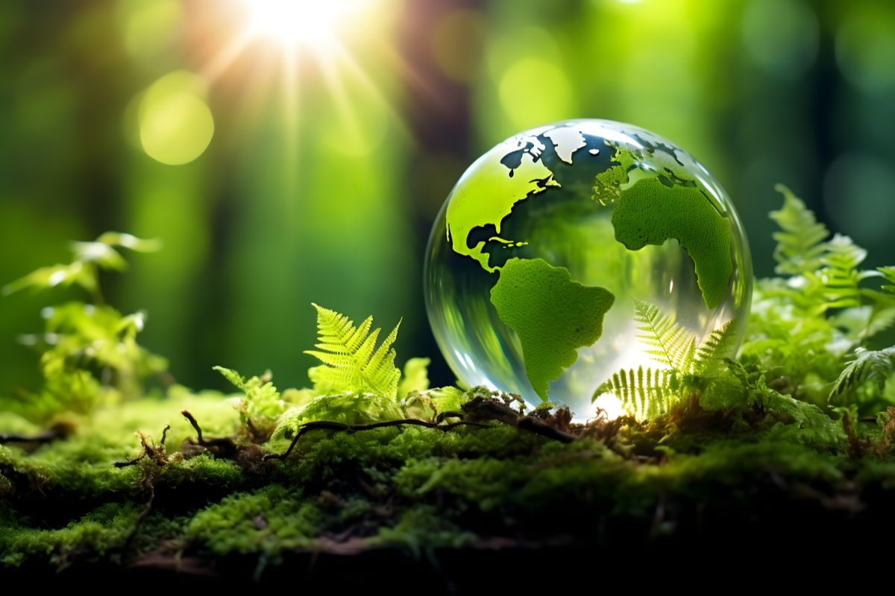

|
ENVRONMENTAL CONSERVATION  "PROTECTING OUR ENVIRONMENT IS OUR PRIORITY" |
| HOME | ABOUT US | PROJECTS | CONTACT US | APPLY |
|
Environmental Conservation
is the
practice of preserving the natural world to prevent it from collapsing
as a result of human activities,
such as unsustainable agriculture, deforestation and burning fossil
fuels |
| Human existence is quite impossible without the presence of a healthy ecosystem. Our environment comprises all living and non-living components and their interactions within a natural habitat. Environmental conservation has become one of the core issues that need to be addressed to battle climate change and global warming. Sustainable development is the need of the hour that can save Mother Earth from the repercussions of industrialization. |
| MUWANGUZI GIDEON PAUL U0193/008 |